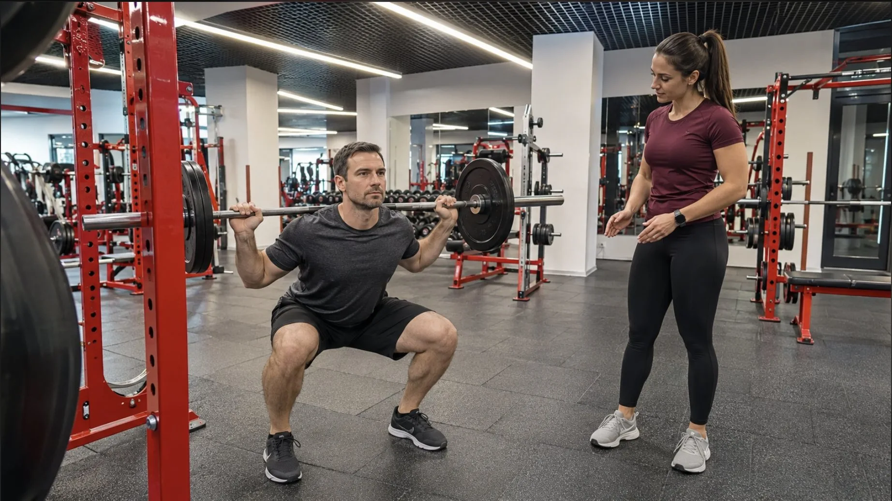

Честный статус
Сделано всё, кроме изображений Gemini и отправки второй ссылки
Для завершения нужен доступ к Gemini или разрешение использовать ChatGPT для второй статьи.
| Материал | Что подтверждено | Следующий шаг |
|---|---|---|
| 31.12 | Статья о коленях, 4 изображения, Тильда, AI Завод и публичное превью. | Открыть превью |
| 30.12 | Текст о перетренированности готов, lint PASS. Нет 4 изображений Gemini. | Не загружена до создания изображений. |
| Telegram | Ева должна отправить обе ссылки после завершения. | Не отправлено: готова только одна. |
Главный вывод: статья о боли в коленях полностью подготовлена и поставлена на 31.12 в Тильду и AI Завод. Статья о перетренированности написана и прошла проверки, но не загружена: Gemini и AI Studio отвечают региональной блокировкой, поэтому четыре изображения не созданы.
Что нужно для завершения: доступ к Gemini в поддерживаемом аккаунте или твоё разрешение создать оставшиеся четыре изображения через ChatGPT. Пока второй вариант не выбран, я не подменяю Gemini и не отправляю незавершённую статью.
1. Что сделано
| Материал | Статус | Доказательство |
|---|---|---|
| «Болят колени после тренировки: 7 причин и когда нужен разбор техники» | Готово на 31.12.2026, 16:40 | Публичное превью, Tilda UID lb80jlble1 |
| «Перетренированность: 8 признаков и план восстановления» | Текст и SEO готовы, изображения не готовы | 1 190 слов, lint PASS, загрузка не выполнена |
| Обоснования для ЛК | Готово | Ключи, спрос, целевая услуга и назначение каждой статьи записаны в шапке |
| Публикация в AI Заводе | Готово для первой статьи | stati_chernoviki.id=25, plan_vyhoda.id=165, дата 2026-12-31 |
| Изображения для первой статьи | 4 новых сцены через ChatGPT | Присед, линия колена, жимовая альтернатива, консультация с планшетом |
| Изображения для второй статьи | Не созданы | Gemini: «isn’t currently supported in your country»; AI Studio перенаправляет на Available regions |
Статья на 31.12 не опубликована раньше срока: в Тильде published и active пустые, работает существующее расписание publish_due.py.
2. Как выбирал темы и почему они продают
Сначала были выбраны «Шапочка для бассейна» и «Солевая сауна». Ты справедливо остановил работу: это повтор старых сюжетов и готовых изображений. Темы заменены на две новые боли из того же плана Codex, а изображения заказаны заново с людьми.
| Дата | Тема Codex | Спрос | За что человек придёт в клуб |
|---|---|---|---|
| 30.12 | Перетренированность | 39 – край, 5 122 – Россия, Wordstat 17.11.2026 | Разбор текущей нагрузки, спокойный план возврата и вводная тренировка |
| 31.12 | Болят колени после тренировки | 28 – край, 1 479 – Россия, Wordstat 10.11.2026 | Разбор техники, замена упражнений и персональная программа |
Обе статьи идут по продающей цепочке:
- Сначала дают безопасное действие, а не рекламу.
- Затем объясняют, почему универсального ответа нет.
- Показывают, что именно тренер сделает на встрече.
- Предлагают записаться на конкретную работу, а не просто «посетить клуб».
Перетренированность: продажа программы восстановления
Статья отвечает на 8 признаков: падение результата, сон, усталость, раздражительность, боль, повторные повреждения, изменение аппетита или пульса, концентрация. Далее даёт дневник нагрузки и пример мягкой недели.
Продукт появляется естественно: тренер смотрит дневник, проверяет несколько движений без работы на пределе и собирает новую программу. Вводная входит в годовую карту, поэтому читатель понимает, что получит при покупке.
Колени: продажа разбора техники
Статья разбирает 7 исправимых причин: скачок нагрузки, разминка, линия стопы и колена, вес и глубина, вариант упражнения, повторы, восстановление. Тревожные симптомы отправляют к врачу, а не к продаже.
Остальная работа продаёт конкретную услугу: тренер смотрит движение со стороны, уменьшает вес и диапазон, подбирает жимовую альтернативу и правила остановки. Читатель идёт не «лечить колено», а разбирать движение и программу.
3. SEO, AEO и GEO
| Элемент | 30.12 | 31.12 |
|---|---|---|
| Главный запрос | перетренированность | болят колени после тренировки |
| Title | Перетренированность: как восстановиться | Balance Абрикосово | Болят колени после тренировки: что делать | Balance Империал |
| Description | 8 признаков, снижение нагрузки и возврат, вводная тренировка | Проверка, остановка и замена упражнений с тренером |
| Объём | 1 190 слов | 1 302 слова |
| Первый ответ | Снизить нагрузку и разобрать причины | Прекратить упражнение и оценить тревожные признаки |
| FAQ | 6 вопросов | 6 вопросов |
| Внутренние ссылки | Клуб, бассейн, сауны | Клуб, начало тренировок, бассейн |
| Разметка | Article и BreadcrumbList, если поддерживает шаблон | Article и BreadcrumbList, если поддерживает шаблон |
| Целевое действие | Вводная персональная тренировка | Разбор техники и персональная программа |
Ключи стоят в title, H1, первом абзаце и смысловых H2. Нет набивания синонимами, скрытых блоков или обещания FAQ-расширенной выдачи. Ответы самостоятельны и пригодны для цитирования ИИ.
Проверки: python3 build.py --lint – 35 файлов, 0 ошибок; python3 posty/obosnovanie.py – 136 с обоснованием, 0 ошибок. Title ≤70, description ≤160, 5–6 FAQ, контакты и ограничения клубов соблюдены.
4. Изображения: все новые, с людьми
Для статьи о коленях ChatGPT создал четыре отдельные сцены 16:9:
- тренер наблюдает присед клиента;
- тренер показывает линию колена и носка;
- тренер предлагает жимовую альтернативу;
- тренер и клиент обсуждают программу с планшетом.
Люди вымышленные, реальные сотрудники не копировались. Помещение и красные тренажёры взяты из фотобанка Империала, но готовые фотографии в статью не вставлялись. Каждый кадр просмотрен крупно и сохранён как JPEG 1844×1038 с комментарием происхождения.


Фактическая стоимость генерации по подписке не измерялась. Платные API не использовались.
Для статьи о перетренированности запланированы четыре новые сцены с уставшим клиентом и тренером, но они не созданы. Старые фотографии бассейна и сауны не используются как готовые иллюстрации.
5. Публикация и проверенные ссылки
| Контур | Результат |
|---|---|
| Текст 35 | stati/35-bolyat-koleni-posle-trenirovki-krasnodar.md |
| Изображения | 4 файла в site/img/ с именем статьи |
| Тильда | UID lb80jlble1, дата 31.12.2026 16:40, черновик |
| AI Завод | Статья id=25, календарь id=165, канал sayt |
| Git | 7e3844d Добавить статью о боли в коленях на 31 декабря |
| GitHub Pages | Deploy success, превью 200 |
| Публичное превью | https://tema-mail.github.io/balance-stati/bolyat-koleni-posle-trenirovki-krasnodar.html |
| Будущий адрес | https://balance-fit.ru/borodinskaya/blog/bolyat-koleni-posle-trenirovki-krasnodar |
Визуально проверены десктоп и мобильный 375 px, загрузка всех четырёх изображений, CTA, контакты, чтение и работа GitHub Pages.
6. Откуда возьмутся показы, переходы и заявки
Гарантировать их нельзя. Рабочая цепочка выглядит так:
- Индексация. После публикации страница становится доступна роботам по точному URL, canonical, title и контенту. Нужно проверить фактический индекс, а не считать его автоматическим.
- Показы. Запрос существует по Wordstat. Если страница попадёт в выдачу, title и description объяснят, что человек получит ответ и следующий шаг. Позиции и показы не прогнозируются числом.
- Переходы. Первый абзац отвечает на вопрос и предлагает безопасное действие. Внутренние ссылки ведут на клуб и смежные материалы. Это даёт шанс на клик, а не гарантирует CTR.
- Заявки. В статье конкретно написано, что тренер сделает на встрече. Человек с проблемой видит не абстрактный клуб, а способ решения и форму заявки.
- Измерение. Через 7 и 28 дней сравниваем индекс, показы, клики, CTR, переходы на
/imperialи цели Метрики. Только по фактическим данным решаем, менять ли заголовок, первый абзац или CTA.
Почему нет UTM
Текущий build.py принимает ссылки только из белого списка. Поэтому UTM не добавлены и не выдумываются. Переходы измеряются по странице статьи и целевой странице клуба. Метрика 71090701 уже привязана, Search Console и Вебмастер Balance в заводе не подключены – это отдельный пробел для оценки поисковых запросов.
7. Что осталось и почему Telegram пока не отправлен
Для 30.12 осталось:
- создать 4 новых изображения через Gemini;
- проверить их крупно;
- загрузить статью в Тильду на 30.12;
- добавить её в календарь AI Завода;
- опубликовать превью и проверить ссылки;
- отправить обе ссылки через Еву.
Ева пока ничего не отправляет: ты просил две ссылки после завершения, а готова только одна. Не заменяю это сообщение отчётом о незавершённой работе.
8. Повторяемые уроки
- Перед выбором темы сравнивать не только запрос, но и существующие статьи и изображения. Доказательство – замена первоначальных бассейна и сауны после твоего замечания.
- До текста фиксировать конкретную продажу: что человек получит на встрече и почему она решает его ситуацию. Обе SEO-карточки начаты с этого решения.
- Не вставлять старые изображения по умолчанию: сначала проверять, повторяет ли статья визуальный сюжет.
- Доступ генератора проверять до обещания результата. Региональную блокировку нельзя скрывать или обходить другой моделью без твоего решения.
Источники
plan90/dekabr.md, Wordstat 10.11 и 17.11.2026.- Shire Sports Medicine, «Fatigue and overtraining syndrome», прочитано 27.11.2026.
- NHS, «Knee pain and other running injuries», прочитано 27.11.2026.
- WHO Europe, «Physical activity», прочитано 27.11.2026.
- Тильда, AI Завод, Git, GitHub Pages и живое превью, проверка 27–28.11.2026.